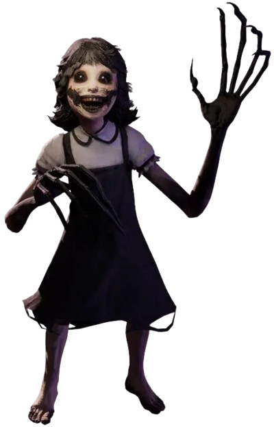

AGATHA

Informação Geral
Nome: Agatha
Gênero: Feminino
Idade: Desconhecido
Papel exercido: Perseguidor
Poder: Teleporte
Fase: Elementary Evil
Gênero: Feminino
Idade: Desconhecido
Papel exercido: Perseguidor
Poder: Teleporte
Fase: Elementary Evil